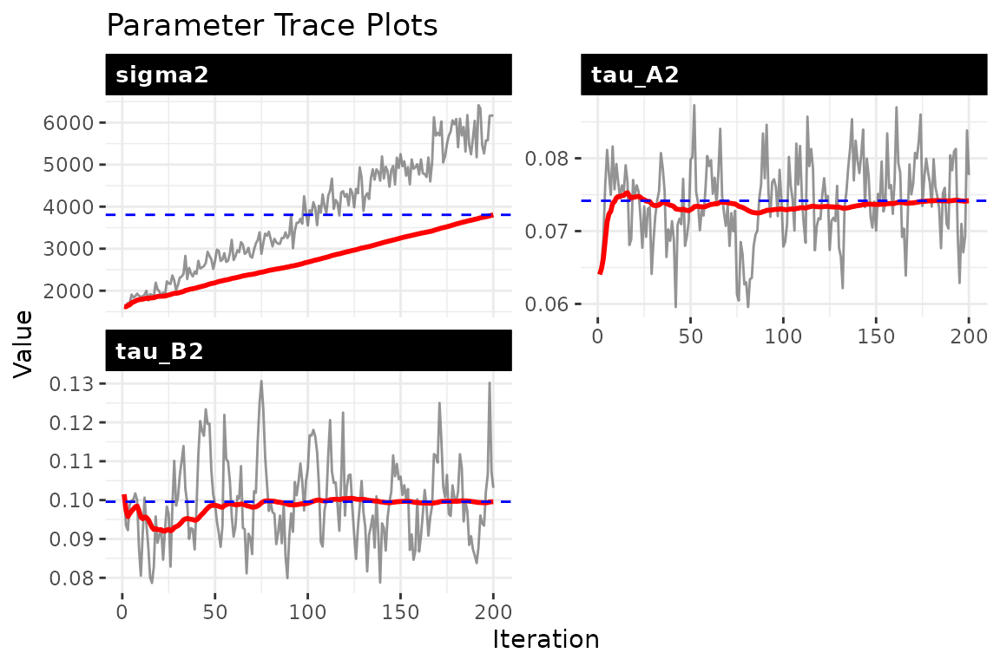
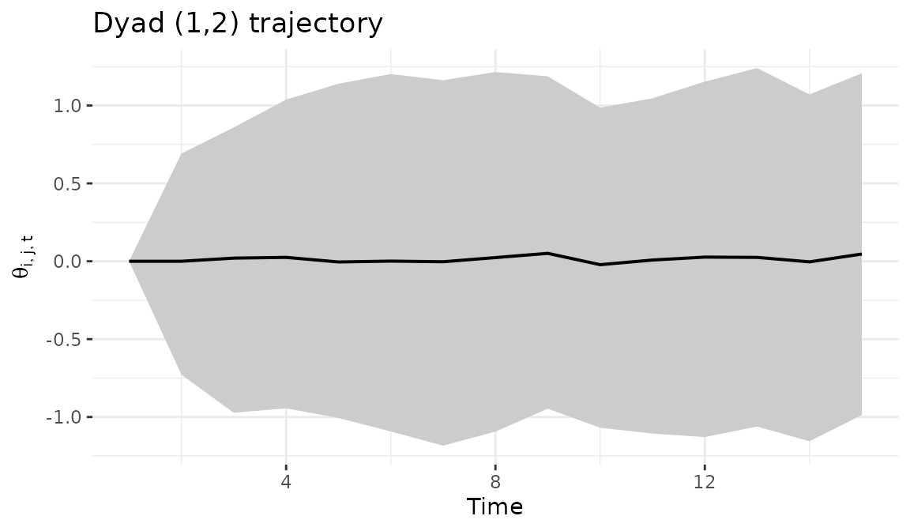
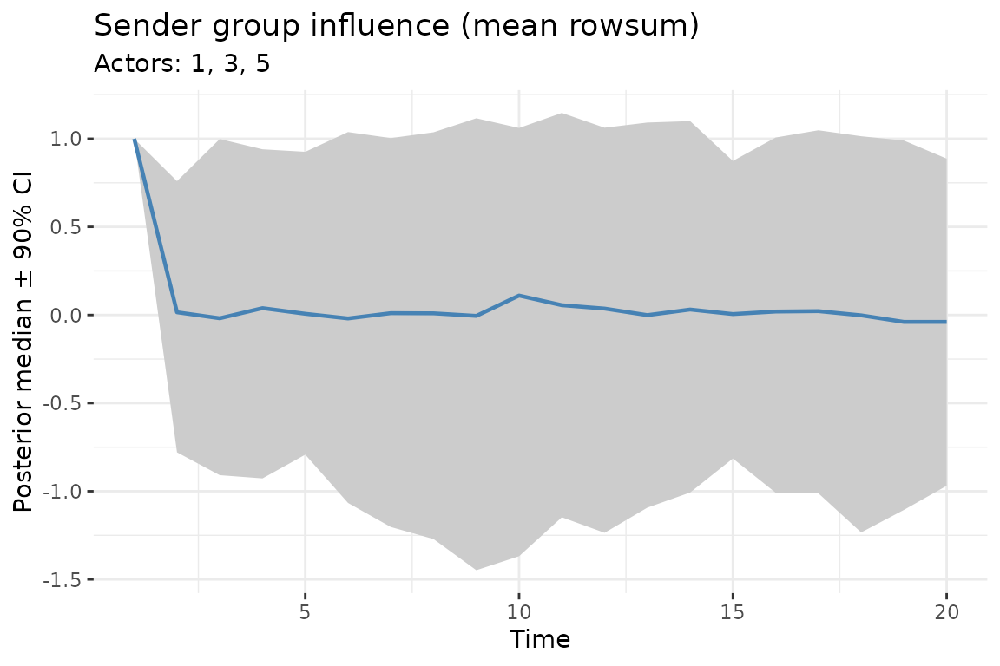

Dynamic bilinear network models
Tosin Salau & Shahryar Minhas
2026-03-25
Source:vignettes/dynamic_dbn.Rmd
dynamic_dbn.Rmd1 The model
The dynamic bilinear model estimates how past network interactions predict future interactions, and how that predictive mapping itself changes over time. The core equation is:
where is the latent interaction state at time (an matrix), and are the time-varying sender and receiver influence matrices, and is a baseline mean capturing persistent dyad-specific tendencies.
What each parameter tells you:
- (sender influence): An matrix where entry measures how strongly actor ’s past behavior as a sender predicts actor ’s current sending behavior. Large positive values indicate that follows or echoes ; negative values indicate opposing patterns.
- (receiver influence): Entry captures how past targeting of actor predicts current targeting of . This reveals shifting alliances and targeting patterns.
- (baseline mean): Captures stable, time-invariant dyad-specific tendencies. A large indicates a persistent tendency for actor to interact with actor , regardless of dynamics.
- (process variance): How much unexplained variation remains in the latent network after accounting for the bilinear dynamics.
- , (innovation variances): How rapidly the influence matrices change from one period to the next. Large values mean the influence structure is reorganizing quickly; small values mean it is relatively stable. If is near zero, the data favor a static influence structure.
- , (AR(1) coefficients, optional): How persistent the influence matrices are. Values near 1 indicate strong persistence; values near 0 indicate rapid mean reversion.
See the methodology page and the working paper for the full mathematical treatment.
2 Simulate a dynamic data set
We generate a small network with 12 actors observed over 20 time periods. The simulation creates time-varying sender and receiver influence matrices.
set.seed(6886)
sim = simulate_dynamic_dbn(n = 12, # network size: 12 actors
p = 1,
time = 20) # total time periods: 20
Y = sim$Y
dim(Y)
#> [1] 12 12 1 203 Fit the dynamic model
We fit the model with ar1 = TRUE to allow autoregressive
persistence in the influence matrices, and
update_rho = TRUE so the AR(1) coefficients are estimated
from the data. The time_thin argument controls how many
time points are stored in the output; set it to 1 to keep all of
them.
fit_dyn = dbn(Y,
family = "ordinal", # ordinal data via rank likelihood
model = 'dynamic', # time-varying A_t, B_t
nscan = 800,
burn = 400,
odens = 4, # save every 4th iteration
time_thin = 1, # save every time period
ar1 = TRUE, # enable autoregressive dynamics
update_rho = TRUE,
verbose = TRUE)4 Convergence diagnostics
Always check convergence before interpreting results. The trace plots show the MCMC chains for each scalar parameter:
- sigma2: process variance — should stabilize, indicating the sampler has found the right noise level
- tau_A2 / tau_B2: innovation variances — these tell you how much the influence matrices change between periods
- rho_A / rho_B: AR(1) persistence — values near 1 indicate strong temporal persistence in the influence structure
check_convergence(fit_dyn)
#> sigma2 tau_A2 tau_B2 g2
#> 2.066464 61.515167 36.456775 51.913459
#>
#> Fraction in 1st window = 0.1
#> Fraction in 2nd window = 0.5
#>
#> sigma2 tau_A2 tau_B2 g2
#> -8.2616 -0.2645 -2.5402 -3.6347
plot_trace(fit_dyn, pars = c("sigma2", "tau_A2", "tau_B2", "rho_A", "rho_B"))
5 Forecasting
Generate forecasts 6 time steps ahead. The model propagates the estimated dynamics forward:
6 Dyad trajectory
Visualize how a specific bilateral relationship evolves over time. The ribbon shows the posterior credible interval — wider ribbons indicate more uncertainty about that dyad’s trajectory:
dyad_path(fit_dyn, i = 2, j = 7)
7 Group-level influence
Track how a group of senders’ aggregate influence changes through time. This is useful for identifying when a coalition of actors becomes more or less structurally important in the network:
plot_group_influence(fit_dyn,
group = c(1, 3, 5),
type = "sender",
measure = "rowsum",
cred = 0.9)
8 Parameter summaries
param_summary() returns posterior means and credible
intervals for all scalar parameters in a tidy data frame.
param_summary(fit_dyn)
#> parameter mean sd q5 q50 q95
#> 1 sigma2 3.805361e+03 1.305657e+03 1.870896e+03 3.817688e+03 6.043277e+03
#> 2 tau_A2 7.416453e-02 5.577535e-03 6.387336e-02 7.464214e-02 8.341511e-02
#> 3 tau_B2 9.957576e-02 1.053630e-02 8.458207e-02 9.884585e-02 1.197036e-01
#> 4 g2 1.252089e-01 3.077106e-02 8.612315e-02 1.185952e-01 1.854716e-01
#> 5 rhoA 7.907962e-01 2.107282e-02 7.570238e-01 7.909403e-01 8.268467e-01
#> 6 rhoB 7.608620e-01 2.727771e-02 7.125525e-01 7.623608e-01 8.050317e-019 Credible intervals and network statistics
Compute dyad-level credible intervals over time. This gives you, for each dyad at each time point, the posterior mean and credible interval for the latent interaction intensity:
tc = theta_credible(fit_dyn, i = 1:6, j = 1:6, time = 1:20)
head(tc)
#> i j rel time mean lower median upper
#> 1 1 1 1 1 2.0504579 -22.18684 3.3534039 21.58073
#> 2 2 1 1 1 29.1609381 14.82135 28.6266136 42.72343
#> 3 3 1 1 1 -34.1252481 -51.40412 -33.0155181 -24.89329
#> 4 4 1 1 1 36.4255985 14.29147 37.6021427 53.06615
#> 5 5 1 1 1 -0.6984207 -17.40425 -0.6098354 12.21810
#> 6 6 1 1 1 -60.2127657 -75.67646 -59.7203886 -44.05003You can use this output to flag dyads whose credible intervals exclude zero at a given time point, indicating a reliably non-zero relationship.
Track network-level statistics over time. Network density summarizes how active the overall network is at each time point, with posterior uncertainty:
ns = network_summary(fit_dyn, stat = "density")
head(ns)
#> time mean lower upper
#> 1 1 0.4722727 0.4469697 0.5000000
#> 2 2 0.5009470 0.4696970 0.5303030
#> 3 3 0.5054545 0.4768939 0.5378788
#> 4 4 0.4954924 0.4621212 0.5303030
#> 5 5 0.5085227 0.4545455 0.5609848
#> 6 6 0.4986364 0.4621212 0.5303030Look for time points where the credible interval is narrow versus wide – narrow intervals mean the model is confident about the overall level of activity at that point.
Compute the posterior probability that each edge is positive at a given time. Values near 1 indicate edges that are consistently positive across posterior draws; values near 0.5 indicate high uncertainty:
ep = edge_prob(fit_dyn, rel = 1, time = 20)
ep[1:5, 1:5]
#> [,1] [,2] [,3] [,4] [,5]
#> [1,] NA 0.00 1.000 1.000 0.000
#> [2,] 1 NA 1.000 0.025 0.000
#> [3,] 0 0.02 NA 1.000 0.995
#> [4,] 1 0.00 1.000 NA 0.025
#> [5,] 1 1.00 0.015 1.000 NAYou can threshold these probabilities (e.g., > 0.95) to construct a binary network of edges that are reliably positive at a given time point.
10 Bipartite (rectangular) networks
The package automatically detects bipartite networks when senders and receivers differ. Simply pass a rectangular array:
sim_bp = simulate_dynamic_dbn(n = 10, n_col = 8, p = 1, time = 15, seed = 77)
dim(sim_bp$Y) # 10 senders x 8 receivers x 1 relation x 15 time points
#> [1] 10 8 1 15
fit_bp = dbn(sim_bp$Y, model = "dynamic", family = "ordinal",
nscan = 400, burn = 200, odens = 2, verbose = FALSE)
summary(fit_bp)When n_row != n_col,
is n_row x n_row (sender dynamics) and
is n_col x n_col (receiver dynamics). Self-loops are
retained since senders and receivers are distinct.
11 Parallel computation
The dynamic model parallelizes the row-wise A and B FFBS updates using OpenMP. Set the number of threads before fitting:
# use physical cores (not logical/hyperthreaded)
set_dbn_threads(parallel::detectCores(logical = FALSE))
get_dbn_threads()
#> [1] 4Parallelization benefits scale with network size: for networks with 15+ actors, expect 2–4x speedup with 4–8 cores. For small networks (n < 10), the overhead of thread management may exceed the benefit, so single-threaded execution is fine.
OpenMP is available by default on Linux and Windows. On macOS,
install it via brew install libomp (see the README for
details). If OpenMP is not available, the package falls back to
single-threaded execution automatically.
To reset to single-threaded:
12 Scaling to larger networks
The dynamic model can handle networks with many actors. The main
constraint is RAM, not computation. Use estimate_memory()
to check requirements before fitting, and adjust time_thin
and odens to manage memory:
# a 50-actor network
estimate_memory(n_row = 50, n_col = 50, p = 1, Tt = 30,
nscan = 5000, burn = 1000, odens = 5,
time_thin = 2, family = "ordinal")
#> Dynamic DBN memory estimate:
#> Network: 50 x 50, 1 relation(s), 30 time points
#> MCMC: 1000 draws (nscan=5000, odens=5)
#> Time thin: 2 (keeping 15 of 30 time points)
#> --------------------------------
#> Theta: 0.28 GB
#> Z: 0.28 GB
#> A: 0.28 GB
#> B: 0.28 GB
#> M: 0.02 GB
#> --------------------------------
#> TOTAL: 1.14 GBFor networks with 100+ actors, you may need 16–32 GB of RAM depending
on the number of time points and MCMC settings. Increasing
time_thin (save every
-th
time point) and odens (save every
-th
MCMC draw) are the most effective ways to reduce memory usage.